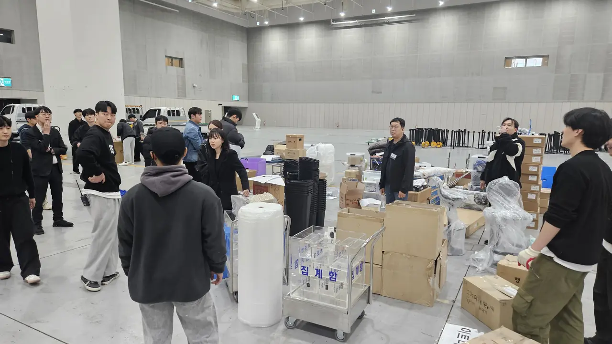

현장 운영 · 2026년 11월 17일
주주총회 현장 운영 준비 체크리스트 접수 좌석 입장 동선
주주총회 현장 운영은 짧은 시간에 많은 사람이 한 번에 입장하는 행사라는 점이 가장 큰 특징입니다. 접수에서 병목이 생기면 입장 전체가 늦어지므로, 접수 · 좌석 구역 안내 · 입장 동선 세 가지를 먼저 설계해야 합니다. 이 글은 담당자가 사전에 정리할 항목과 당일 인력의 역할을 체크리스트로 정리했습니다.

- 핵심은 접수에서 병목이 생기지 않게 만드는 것이다
- 좌석 구역 표지와 바닥 구획선으로 입장 후 혼란을 줄인다
- 확인 절차와 판단은 회사 담당 부서가 하고 인력은 안내를 맡는다
- 입장이 몰리는 시간과 퇴장 순간을 따로 준비한다
주주총회 현장 운영의 특징
주주총회는 정해진 시간에 시작하고, 참석자는 비슷한 시간대에 몰려옵니다. 다른 행사처럼 천천히 입장하는 것이 아니라 짧은 구간에 한꺼번에 접수가 이루어집니다. 그래서 인력 운영도 접수 구역과 입구에 집중 배치되는 구조가 됩니다.
또 하나 중요한 점은 확인 절차가 정해져 있다는 것입니다. 어떤 서류를 보고 어떻게 확인할지는 회사 담당 부서가 정하는 절차이고, 현장 인력은 그 절차대로 안내하고 응대합니다. 인력이 자격이나 의결에 관한 판단을 하지 않도록 역할 경계를 미리 정해 두어야 합니다.

준비 단계 체크리스트
행사 전에 담당자가 정리할 항목입니다. 에이전시와 상담할 때 이 표대로 답하면 인력 운영 계획이 빠르게 나옵니다.
| 항목 | 확인할 내용 | 담당 |
|---|---|---|
| 접수 방식 | 접수대 개수, 확인 순서, 서류 수령 방식 | 회사 담당 부서가 정하고 인력은 안내합니다 |
| 입장 동선 | 입구에서 접수대, 접수대에서 좌석까지의 길 | 도면에 화살표로 표시합니다 |
| 좌석 구역 | 구역 번호, 표지 위치, 구역별 안내 담당 | 현장 책임자와 함께 정합니다 |
| 특별 좌석 | 임원석, 장애인석, 별도 안내가 필요한 참석자 | 명단과 안내 방법을 따로 정리합니다 |
| 대기 상황 | 접수대 앞에 줄이 길어질 때의 대처 | 대기 구역과 줄 안내 담당을 정합니다 |
| 질의와 마이크 | 질의 순서에 마이크를 전달하는 방식 | 무대 보조 인력과 방법을 맞춥니다 |
접수 구역 운영
접수 구역은 짧고 단순하게 만들수록 병목이 줄어듭니다. 한 곳에서 모든 일을 처리하기보다 확인과 서류 수령, 좌석 안내를 단계별로 나누면 한 사람이 오래 붙잡히지 않습니다.
- 접수대 앞에는 줄 방향을 알려 주는 안내 담당을 둡니다.
- 접수대 담당에게는 확인 절차와 막혔을 때 부를 사람을 알려 줍니다.
- 접수를 마친 참석자는 바로 좌석 안내로 이어지게 합니다.
- 접수가 끝난 뒤에도 늦게 오는 참석자를 위한 자리를 남겨 둡니다.
좌석 구역과 입장 동선
좌석이 많은 행사장에서는 참석자가 입장한 뒤 자기 자리를 찾지 못해 멈추는 순간이 가장 위험합니다. 통로가 막히고 뒤에서 밀리기 때문입니다.
이 문제를 줄이는 방법은 세 가지입니다. 첫째, 구역 번호 표지를 멀리서도 보이는 높이에 둡니다. 둘째, 바닥에 구획선을 그어 통로와 좌석 영역을 구분합니다. 셋째, 구역 입구마다 안내 담당을 세워 참석자가 구역 안으로 들어가기 전에 방향을 잡아 줍니다.

당일 시간대별 흐름
- 준비 시간: 접수대와 표지를 확인하고 인력 위치를 점검합니다.
- 입장이 몰리는 시간: 접수대와 입구, 구역 입구에 인력을 집중합니다.
- 본 행사 시간: 늦게 오는 참석자 안내와 질의 지원으로 역할을 바꿉니다.
- 퇴장 시간: 출구와 주차장 방향 안내에 집중합니다.
- 철수 시간: 분실물과 남은 물품을 확인합니다.
지노컴퍼니는 행사 전 최종 점검 미팅과 행사 당일 현장 관리 · 모니터링, 행사 후 평가와 피드백 수집까지 단계별로 진행합니다. 주주총회 같은 기업 행사의 인력 운영이 필요하면 인력 서비스에서 인력 유형을 확인하고 견적 문의로 알려 주세요.
자주 묻는 질문
접수 인력은 서류 확인도 하나요?
확인 절차는 회사가 정하는 것이므로, 정해진 절차를 안내하고 응대하는 범위에서 인력을 운영합니다. 어떤 일을 맡길지는 사전에 서면으로 정해 두는 편이 안전합니다.
퇴장 시간에도 인력이 필요한가요?
필요합니다. 입장은 접수를 거쳐 나눠지지만 퇴장은 한꺼번에 몰립니다. 출구와 주차장 방향 안내는 별도로 계획해 두어야 합니다.
접수 인력과 좌석 안내 인력은 따로 두는 게 좋은가요?
행사장 구조에 따라 다르지만 역할을 나누는 편이 병목을 줄입니다. 접수를 마친 참석자를 바로 좌석 안내로 이어 주는 구조를 만들어 보세요.